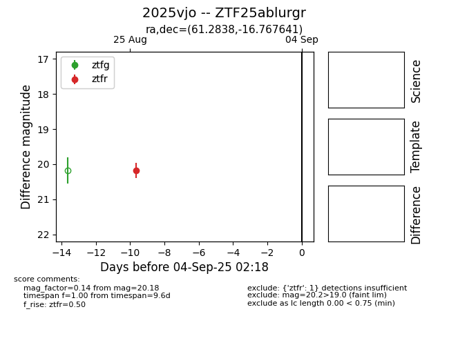

FINK: ZTF25ablurgr
Lasair: ZTF25ablurgr
ALeRCE: ZTF25ablurgr
TNS: 2025vjo
YSE: 2025vjo
ZTF25ablurgr (ztf,fink)
2025vjo (tns,yse)
equatorial (ra, dec) = (61.2838,-16.76764)
galactic (l, b) = (210.2960,-44.18998)

last ztfr=20.18
1 ztfr detections